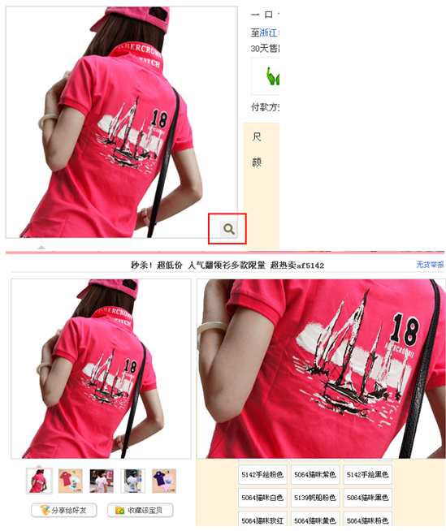
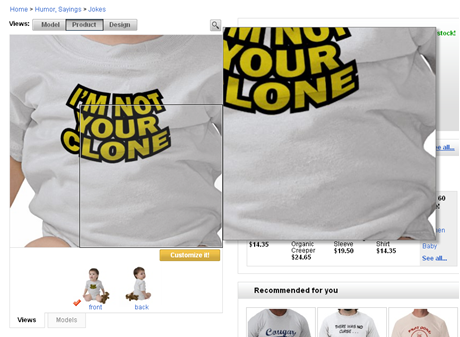
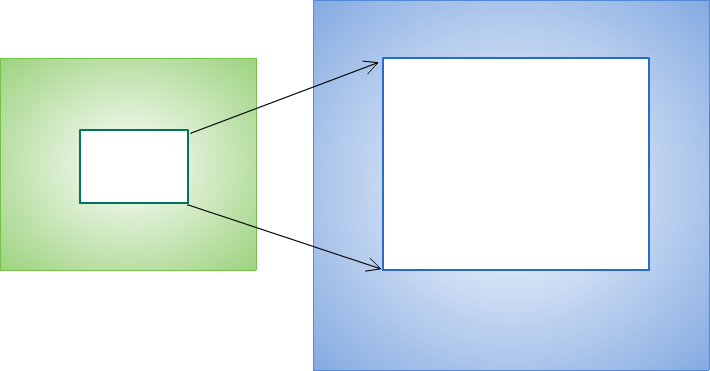

S.ImageZoom
乔花
2010.07
一. 应用场景
二. 同类组件
三. 功能分析
四. 技术方案
五. Public API
六. 开发计划
七. 其它
3) 淘宝: 默认有一个放大镜在小图右下角, 提醒用户有放大的功能, 用户引导性比较好. 鼠标移至小图上方, 放大镜消失; 小图上没有镜片效果.

4) Zazzle: 大图和小图的高度有点偏差, 不知道是不是故意这么设计的.

5) Apple:
* 鼠标移至上方显示放大镜, 点击, 以鼠标点击的位置为轴心放大图片, 鼠标变成手型, 单击鼠标不放可拖动大图. 只能单独显示小图或者大图, 没有整体和局部的对比;
* 用户增加了点击鼠标拖动的操作;
* 在大图上移动, 用户鼠标的移动范围要大些, 影响效率;
* 用户能直接定位到自己想看的位置.
* 小图放大到大图, 过渡很自然.

1. JQZoom：http://www.mind-projects.it/projects/jqzoom/ - 基于 jQuery 类库，大小 8.7k - 支持 standard 和 reverse 两种显示类型； - 提供 preload 功能，大图显示时支持特效； - 配置丰富，调用方便。 2. ImageZoom: http://www.cnblogs.com/cloudgamer/archive/2010/04/01/ImageZoom.html - 基于 CJL 类库，大小 6.1k - 支持 standard, follow, reverse, handle 等多种显示类型； - 支持使用原图放大。大图未加载前，使用原图放大，减少等待时间； - 支持预加载、放大系数、自动隐藏、鼠标滚动缩放大图等功能； - 功能是同类组件中最全的，两篇介绍博文也相当不错。 3. ImageScaler: http://yiminghe.javaeye.com/blog/388872 - 基于 Ext 类库，大小 6.9k - 有缩放功能、支持拖拽、移动； - 严格说来，这个组件的目的不是图片放大，而是图片裁剪功能，挺有意思。
4. AnythingZoomer: http://css-tricks.com/examples/AnythingZoomer/image.php - 基于 jQuery 类库，大小 1.2k - 显示类型只有跟随模式; - 强大之处在于，该组件可以放大任何区域，比如文本等等，不愧为 anything zoomer! 5. CloudZoom: http://www.professorcloud.com/mainsite/cloud-zoom.htm - 做的很漂亮, 细节处理...
1. 显示类型，可总结为以下 3 类：
- 标准模式 standard: 可参考 JQZoom 的默认显示，可设置 放大镜 lens 是否显示；
- 反转模式 reverse: 可参考 JQZoom 的反转模式，或 CJL ImageZoom 的 cropper 模式，该模式下，lens 必须显示；
- 跟随模式 follow: 可参考 CJL ImageZoom 的 follow 模式。
特有意思：Zazzle 上的 follow 模式非常值得仿效：Zazzle
反转模式在调研的在线应用中，没有一家采用。很可能是因为反转效果很唐突，对用户体验无益。
无 lens 的标准模式，在在线应用中也很少看到。因为有 lens 的感觉更佳，组件实现时，可以不考虑无 lens 的标准模式。
综上考虑，KISSY 将实现以下两种显示类型：
- 标准模式 standard 显示 lens
- 跟随模式 follow 分 普通跟随模式 和 Zazzle 的跟随模式，具体参数实现时再定
2. 大图的预加载功能。基本是标配，KISSY 可以进一步做到：
- 仿照 Zazzle 的效果，在大图加载过程中显示进度条，以及相关提示文字, 目前已添加 loading 样式
3. 放大系数、滚轮缩放、拖曳裁剪等功能，对用户用途不大，不支持
4. 放大镜提示小图片很不错，能引导用户主动悬浮，支持该功能
- 假定：小图和大图的尺寸都已知
- 小图上某个区域的尺寸也给定

- 1) 目标显示区域如何计算
- 2) 如何将小图上的显示区域映射到大图上的显示区域
目标显示区域计算

镜片位置

边界处理
鼠标移动时，小区域映射到大区域

- 小图至大图缩放具有动画效果, 且在大图未加载完成时, 使用小图进行放大. 由此需要在大图加载完毕时刻, 替换原来的小图.
- 运动初始, 图片大小为小图大小, 终态为 config 中设置的尺寸, 不使用真实大图尺寸, 是因为在动画过程中会动态设置宽高, 即使大图加载完, 也无法获取到正确的大图尺寸.
- 放大的终态, 鼠标触发时的中心点应该定位到放大区域的中心位置.
- 运动过程中, 不响应鼠标移动事件.
config:
type: STANDARD, // 显示类型
bigImageSize: [800, 800], // 大图高宽, 大图高宽是指在没有加载完大图前, 使用这个值来替代计算, 等加载完后会重新更新镜片大小, 具体场景下, 设置个更合适的值.
position: 'right', // 大图显示位置, 可取 top, right, bottom, left, inner
//alignTo: undefined, // 大图显示位置相对于哪个元素, 默认不设置, 相对于小图位置, 如果取 PARENT, 为小图的 offsetParent 元素
offset: 10, // 大图位置的偏移量. 单一值或 [x, y]
preload: true, // 是否预加载大图
zoomSize: [AUTO, AUTO], // 放大区域宽高
lensIcon: true, // 是否显示放大镜提示图标
zoomCls: '' // 放大区域额外样式
Member:
image // 需要缩放的图片
config // 配置参数
lens // 镜片
lensIcon // 放大镜图标
bigImage // 大图
viewer // 大图显示区域
Method:
show() // 显示
hide() // 隐藏
set(name, val) // 重新设置某些值
- bigImageSrc // 重设大图 url
- hasZoom // 重设 hasZoom 标志
refreshRegion // 调整放大区域位置
Event:
show // 放大区域显示之后
hide // 放大区域隐藏之后
viewer_create // 放大区域生成之后
1) 出现镜片, 大图位置默认在小图右边:
var a = new S.ImageZoom("#standard");
a.set('bigImageSrc', "http://img03.taobaocdn.com/bao/uploaded/i3/T1fftwXf8jXXX7ps79_073021.jpg");
2) 多图切换时, 大图 src 的更改通过 m.set('bigImageSrc', data); 小图 src 通过 set('imageSrc') ,
也可直接在外部更改小图 src 值, 两者区别仅在是否处理 ks-imagezoom-loading 状态.
var m = new S.ImageZoom("#multi");
S.Event.on("#imgList img", 'click', function() {
var data = S.DOM.attr(this, 'data-ks-imagezoom');
m.set('imageSrc',data+'_310x310.jpg');
//S.DOM.attr('#multi', 'src', data+'_310x310.jpg');
m.set('bigImageSrc', data);
});
3) position 为 inner 时, 需要给定 bigImageSize, 且该值固定, 不会随着大图加载完毕而更新;
new S.ImageZoom("#innerGIF", {
position: 'inner',
bigImageSize: [512, 512],
offset: 0,
lensIcon: false
});
另外, inner 方式下, 对齐元素为原小图, 设置 alignTo 无效.
4) hasZoom 属性, 默认为 true. 在多图切换时, 可重设该值来开启或关闭显示放大功能. 如果多个图都不需要放大显示, ImageZoom 不会生成任何东西.
m.set('hasZoom', false);
ks-imagezoom-viewer : 放大区域样式, 注意: config 中的 zoomCls 附加到放大区域容器上
ks-imagezoom-lens : 镜片样式
ks-imagezoom-icon : 放大镜图标样式
ks-imagezoom-loading : 放大区域等待状态样式
7月完成初稿; --version 0.1
8月第一次重构, 去除不必要功能; --version 1.0
9月第二次重构, 基于 Overlay 扩展; --version 1.0
9月实现Follow模式, 类似于 zazzle 上的效果; --version 1.1
接口是否足够 KISS：
S.ImageZoom(selector, config);
第一次悬浮事件的命名?
zoom.on('firstHover', ...);
or
zoom.on('loadBigImage', ...);
需不需要下面这些事件：
zoom.on('show', ...);
zoom.on('hide', ...);
要暴露哪些公共方法：
?
已有功能是否已满足 8/2 原则?
已有功能是否都需要? 有什么可以砍掉的鸡肋吗?
通过扩展可以实现不常用的那 20% 吗?
支持 touch 设备?
使用文档： http://kissyteam.github.com/kissy/docs/imagezoom/index.html
测试页面： http://kissyteam.github.com/kissy/src/imagezoom/test.html